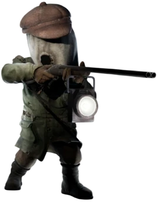
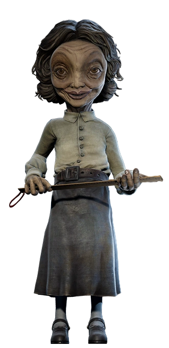
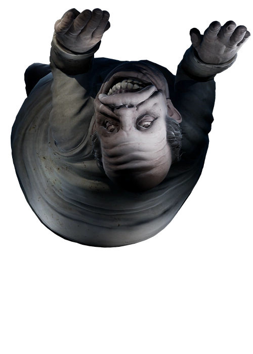

Little Nightmares II
Dicas para sobreviver à Cidade Pálida
1. Observe antes de agir. Muitos perigos podem ser evitados ao observar os movimentos dos inimigos.
2. Explore cada cenário. Procure alavancas, chaves e objetos que podem ser empurrados.
3. Use Six como ajuda. Em vários momentos, Six pode alcançar objetos e indicar o caminho.
4. Não enfrente os adultos de frente. Mono é pequeno e frágil. Fugir e se esconder é importante.
5. Escute os sons. Passos e ruídos ajudam a perceber quando um inimigo está perto.
Bosses Marcantes

O Caçador
O Caçador é o primeiro grande inimigo encontrado por Mono e Six.

A Professora
A Professora aparece na escola e é uma das principais ameaças.

O Doutor
O Doutor aparece no hospital e se movimenta pelas paredes e teto.

O Homem Magro
O Homem Magro está ligado à Torre de Sinal e possui papel chave na história.